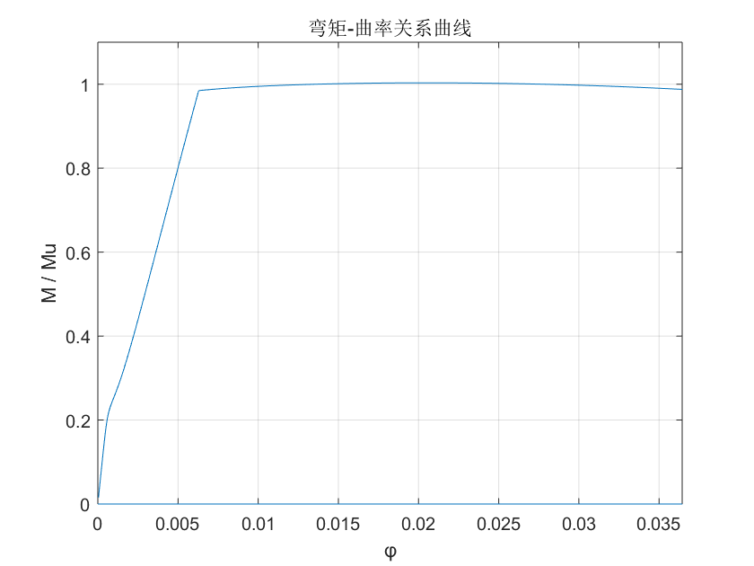

fprintf('************************************\n'); fprintf('欢迎使用刘泰编写的弯矩-曲率曲线求解器！\n'); fprintf('************************************\n'); fprintf('\n'); fprintf('混凝土相关参数请参考叶列平老师教材P25的表2-3及附表2-1\n'); fprintf('受压的过镇海曲线相关参数，请参考叶列平老师教材P33的表2-4\n'); fprintf('受拉的过镇海曲线相关参数，请参考叶列平老师教材P38的表2-7\n'); %基本参数从同目录下的data.xlsx中读取 b=xlsread('data.xlsx','sheet1','B1'); h=xlsread('data.xlsx','sheet1','B2'); h0=xlsread('data.xlsx','sheet1','B3'); fc=xlsread('data.xlsx','sheet1','B4'); ft=xlsread('data.xlsx','sheet1','B5'); alpha=xlsread('data.xlsx','sheet1','B6'); beta=xlsread('data.xlsx','sheet1','B7'); fy=xlsread('data.xlsx','sheet1','B8'); d=xlsread('data.xlsx','sheet1','B9'); n=xlsread('data.xlsx','sheet1','B10'); e0=xlsread('data.xlsx','sheet1','B11'); aa=xlsread('data.xlsx','sheet1','B12'); ad=xlsread('data.xlsx','sheet1','B13'); et0=xlsread('data.xlsx','sheet1','B14'); at=xlsread('data.xlsx','sheet1','B15'); %首先计算极限弯矩Mu as=n*pi/4*d^2; x=fy*as/fc/b; mu=fy*as*(h0-0.5*x); %建立样本集合 phij=zeros(1,1000); mj=zeros(1,1000); %确定循环极限 k1=alpha*beta; xnmax=fy*as/k1/fc/b; ecmax=0.0033;%一般混凝土极限压应变3300微应变 phimax=ecmax/xnmax; ES=2.06*10^8;%钢筋弹性模量，单位为kPa fprintf('\n'); fprintf('主程序运算大约持续30秒，请耐心等待...\n'); %循环自小到大生成φ，ec在上下界之间二分法迭代，直到拉压力差收敛到预定值 for i=1:1000 phij(i)=i/1000*phimax; ecd=0; ecu=phij(i)*h0; while 1 ec=0.5*(ecd+ecu); xn=ec/phij(i); es=phij(i)*(h0-xn); %首先求受压相关的参数 y=0:xn/1000:xn;%用梯形面积求和模拟积分，首先划分为1000个区间 ecy=phij(i)*y; sigmac=zeros(1,1001);%用过镇海曲线作为受压时的本构模型，求取混凝土应力，以便求总压力 for j=1:1001 v=ecy(j)/e0; if (v<=1) sigmac(j)=fc*(aa*v+(3-2*aa)*v^2+(aa-2)*v^3); else sigmac(j)=fc*v/(ad*(v-1)^2+v); end end C=trapz(y,sigmac*b);%用梯形面积求和模拟积分 yc=trapz(y,sigmac*b.*y)/C; %再求受拉相关的参数 z=0:(h0-xn)/1000:(h0-xn);%用梯形面积求和模拟积分，首先划分为1000个区间 etz=phij(i)*z; sigmat=zeros(1,1001);%用过镇海曲线作为受拉时的本构模型，求取混凝土应力，以便求总压力 for k=1:1001 q=etz(k)/et0; if (0<=q)&&(q<=1) sigmat(k)=ft*(1.2*q-0.2*q^6); else sigmat(k)=ft*q/(at*(q-1)^1.7+q); end end Tc=trapz(z,sigmat*b); yt=trapz(z,sigmat*b.*z)/Tc; ys=h0-xn; if (es<=fy/ES) Ts=ES*es*as; else Ts=fy*as; end %开始判断迭代结束条件,并开始准备下一次迭代 if (abs(C-Tc-Ts)<10^-6) break; end if (C>Tc+Ts) ecu=ec; ec=(ecd+ecu)/2; else ecd=ec; ec=(ecd+ecu)/2; end end if ec>0.0033%若超过混凝土的极限压应变，则无需再增大φ,跳出最外层for循环 num=i;%超过极限混凝土压应变的部分不予画出，因此先行计数 break; end mj(i)=(C*yc+Tc*yt+Ts*(h0-xn));%最后将迭代完毕后的数值赋入样本数据集合 end fprintf('\n'); fprintf('主程序运算结束\n'); %下面开始画图 plot(phij,mj/mu); grid on xlabel('φ') ylabel('M / Mu') axis([0 phij(num-10) 0 1.1]) title('弯矩-曲率关系曲线')
************************************ 欢迎使用刘泰编写的弯矩-曲率曲线求解器！ ************************************ 混凝土相关参数请参考叶列平老师教材P25的表2-3及附表2-1 受压的过镇海曲线相关参数，请参考叶列平老师教材P33的表2-4 受拉的过镇海曲线相关参数，请参考叶列平老师教材P38的表2-7 主程序运算大约持续30秒，请耐心等待... 主程序运算结束
